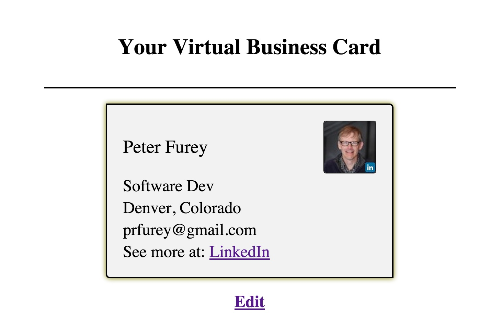
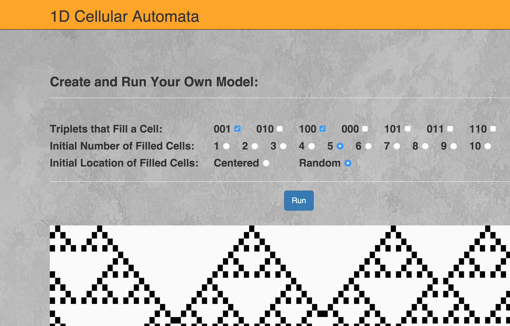
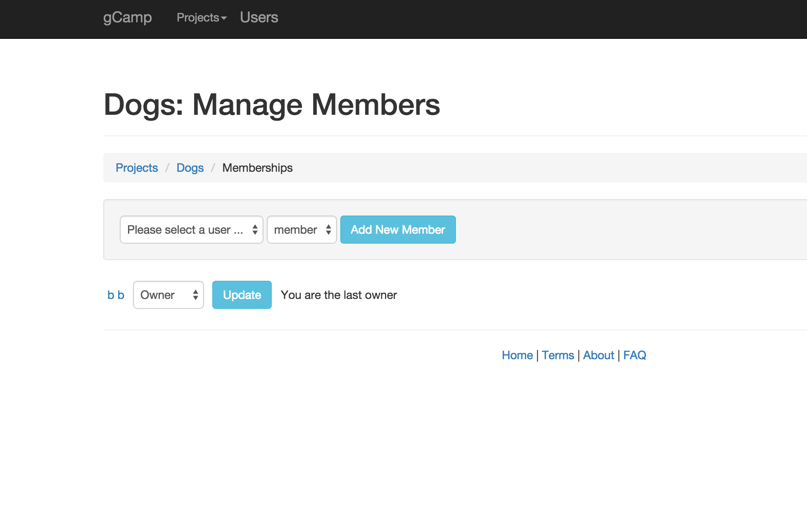

Peter R. Furey
My purpose is to harness the power of software development to do great things.
I have a background originating in science and training in full-stack web application development. I offer a great combination of quantitative know-how, research experience, and technical knowledge.
Projects
Virtual Card
|  |
Product DescriptionThis app allows a user to develop a "virtual business card" starting from information provided on their LinkedIn account. The user can then email business colleagues or friends a link to the final product. There's nothing fancy here in terms of UI, but the app is fully functional.Technical Notes
Backend - Rails, Ruby, PostgreSQL
Frontend - JavaScript, jQuery, React
APIs - LinkedIn
|
1D Cellular Automata
 |
Product DescriptionThis app stemmed from efforts to develop a “lightning talk”. It introduces the concept of a 1D Cellular Automaton model and provides a web page in which you can develop and run such a model. There's nothing fancy here in terms of UI, but the app is fun to play with.Technical Notes
Backend - Rails, Ruby, PostgreSQL
Frontend - Bootstrap
|
Water Nexus
|
|
Product DescriptionThis app originated as an idea to connect water observation with water use and sentiment. The relevance for this idea would be to assess if sentiment (loosely, how people perceive the value of water) falls in line with observation and use. In pursuing this idea as a personal project for a Galvanize course, I wanted to learn more about api implementation, JQuery, and D3. The resulting app here is a small step towards the overall idea. The biggest challenge is obtaining sentiment information, for which Twitter and even Tumbler data seem insufficient.Technical Notes
Backend - Rails, Ruby, PostgreSQL
Frontend - JavaScript, jQuery, Bootstrap, D3
APIs - Google Map, Tumbler
|

GCamp
 |
Product DescriptionThis app serves as a project management tool. I completed it at the Galvanize Full-Stack course in 2015. Backend code includes nested resources, permissions, validations and Rspec tests.Technical Notes
Backend - Ruby, Rails, PostgreSQL
Frontend - Bootstrap
|